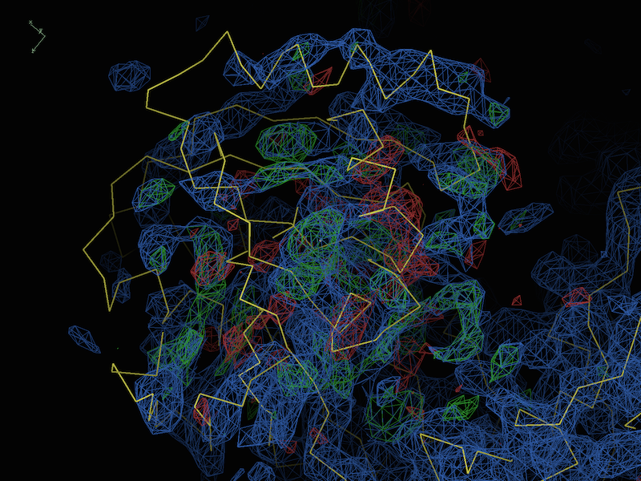

How do I know if Phaser has solved my structure?
This is answered in detail in the section "Has Phaser solved it?" in the main Phaser manual, but it can be summarized as follows: the final translation function Z score (TFZ) should be above 8, and the log-likelihood gain (LLG) should be positive and as high as possible. Of course, as with experimental phasing, the ability to autobuild most of the model is the single best measure of a correct solution; alternately, running a single round of refinement should result in an R-free below 0.50. Note that if the R-free is above 0.5 after refinement, this often indicates indicates that the solution is actually incorrect - especially when combined with sub-standard TFZ and/or LLG values. Just because Phaser finds a solution, does not mean that it has correctly solved the structure!
Why doesn't Phaser report an R-factor?
The R-factor is far less sensitive than the TFZ and LLG scores, especially when searching for remote homologs or a small part of the overall scattering mass. Phaser does record R-factors for the rigid-body refinement step towards the end of a run, which can be found in the logfile. However, unless these values are relatively low (< 40%), they are not reliable indicators of solution quality, which is why only the Z-scores and LLG are reported in the GUI.
What if I don't get a good solution?
This is also covered in detail in the main Phaser manual, in the section "What to do in difficult cases".
What resolution cutoff should I use?
In short, in most cases you should let Phaser choose the resolution cutoffs. Phaser uses the assumed accuracy of the model (expressed directly as RMSD or indirectly as sequence identity), the size of the model, and both the resolution and number of diffraction observations to determine the signal that will be obtained for each model as a function of resolution. This is used both to determine a resolution cutoff that should be sufficient for a successful MR search, and an optimal search order for the models. The effects of bulk solvent at low resolution are taken into account internally, so you do not need to specify a low-resolution cutoff either.
Should I use the output MTZ file from Phaser for refinement?
No, it is always best to use the original data file for refinement. The MTZ file from Phaser contains map coefficients, but in most cases you will find that better maps can be obtained by immediately running a round of refinement or automated re-building.
How are the ASU contents and search ensembles related?
Technically, they aren't connected. The ensembles are used in the actual MR search; the ASU contents only tells Phaser what to expect for the overall scattering mass of the asymmetric unit (an important factor in the maximum likelihood scoring). Although you may only specify one sequence per component, you can instead provide a molecular weight for a collection of chains. You may also split a model into smaller ensembles (for instance, different domains) while keeping the ASU contents the same, or use a multi-chain search model while specifying a sequence file for each chain.
How can I make Phaser go faster?
Phaser is under continuous development, with a lot of emphasis being placed on speed, so anything we could advise here is probably already being done automatically! Because Phaser now automatically chooses the lowest resolution expected to give a clear solution, changing the resolution limits is not advisable and may even lengthen the run times. It's a good idea to set up a Phaser run to find all copies of all components in one job, because this allows Phaser to choose the optimal search order and to amalgamate solutions for multiple copies found in one search.
Can PHENIX do MRSAD?
Yes, PHENIX can run MRSAD (molecular replacement, combined with SAD phases) by using molecular replacement information in the process of determining the anomalous scatterer substructure. However, this requires separate steps for carrying out the MR and finding the substructure. There are two simple ways to do this; both are described in the AutoSol documentation.
I am using a dimer as my search model. Why am I getting a warning that the unit cell is too full?
Remember, the contents of the asymmetric unit is specified independently of the model. If you have supplied a single sequence to define the ASU contents, check to make sure that you have specified that the contents of the asymmetric unit include two copies.
I want to create an ensemble of models. Should I run Sculptor first and then Ensembler, or the other way round?
Unfortunately, neither way is optimal. When Sculptor is run first, it removes residues from the model, and this may impact on Ensembler's ability to do an optimal superposition. If the default SSM matching is used, the fragmentation of secondary structure elements (prominent when models are distant) may result in incorrect matching, although this is rare. When Ensembler is run first, and trimming is switched on, the resulting main-chain trace can contain many short fragments, which will be discarded by Sculptor since these cannot be reliably matched to the alignment sequence, and the completeness of the resulting model is further decreased. The best compromise is probably to run Sculptor first, so that the sequence-to-chain alignment could be performed optimally. In common cases, this does not impair superposition drastically, since there are still many sites to use. In case SSM alignment fails, other matching algorithms (e.g. residue sequence numbers) can be used.
What should I run after Phaser finds a good solution?
We usually recommend one (or both) of these two options (and see the next question for advice on more difficult cases):
I ran Phaser, it found a solution, then I ran phenix.refine, and the R-free is stuck above 0.4 (but below 0.5). How do I fix this?
This is an open-ended question, and there are multiple explanations and solutions possible. We usually recommend a standard series of checks:
If all of the both indicate that model and data are reasonably sensible, it is likely that there are differences/model errors that are beyond the radius of convergence of refinement. Fortunately, this is usually easy to recognize in the difference maps even at low resolution; for instance, a representative test case at 4.0Å (described in DiMaio et al. 2013):

Here we can see very clearly that the model is simply misfit (although the majority of the protein, mostly outside the field of view, is more or less correct). In this case, there are several tools you can try, many of which were specifically designed to cope with this class of problems:
Additionally, if multiple structures of the same protein are available for use as search models, we recommend checking whether any of these is closer to the target than the current search model.
Do I actually have to include multiple models in my ensembles?
No, we use "ensemble" in this context to refer to any search model; in many cases a single model is adequate to solve the structure (and these may be much easier to work with).
What is the difference between "high resolution" and "high resolution for refinement"?
The latter is applied during the "refinement and phasing" step only; for rotation and translation searches, the first parameter is used.
How do I search for multiple unique ensembles?
The "Search procedure" tab allows you to set up this procedure. To search for multiple independent ensembles representing different entities in a complex ("a AND b AND c"), click the "Add search" button below the tab, and for each search, check the ensemble(s) to be used at that step. The searches will be performed in the order they appear in the GUI. Note that this is not the same as checking multiple ensembles for a single search, as described in the next question.
How do I tell Phaser to pick the best solution from among several similar ensembles?
To try multiple alternative ensembles (corresponding to the same actual entity in the crystal) at once ("a OR b OR c"), check the box next to each ensemble you want Phaser to try for a single search; only one of these will actually be placed in the output model. (You can, of course, specify any combination of searches and ensembles, for instance "(a OR b) AND c", which would be two separate search instructions.)
I want to run a new search in Phaser starting from the results of a previous job. How do I specify this?
If the previous job was run in the Phenix GUI, you can select it from the drop-down menu labeled "Use partial solution from previous job" in the "Input and general options" tab. This will automatically load the solution. Note that unlike the CCP4i interface, Phaser-MR in Phenix does not make use of .sol files, since the information is passed internally. You should then load the new ensembles to search for; ensembles that were used in the previous run do not need to be re-loaded unless you wish to find more copies. If you have already provided complete information about the ASU contents correctly, this will not need to be changed.
How do I run a new search starting from an existing model in the correct orientation and translation?
This might apply if you have a refined model, or a solution from another program. In this case, you should add the model as an ensemble, and check the box "Ensemble is fixed partial solution". This will instruct Phaser to accept the input coordinates without modification, and skip to the next ensemble to search for. You do not need to specify a separate search for this ensemble, as it will be included automatically.
How do I tell the program to use a local PDB mirror instead of fetching entries remotely?
See the general FAQ list.
Why does mr_rosetta bomb and say "error while loading shared libraries: libdevel.so: cannot open shared object file: No such file or directory"?
This may indicate that somewhere your system is defining the shared libraries that Rosetta needs, and these are for a place that is not where Rosetta expects them to be. You can try to ignore the previous definitions this way:
If you are using the bash or sh shells:
export PHENIX_TRUST_OTHER_ENV=1
or csh (C-shell):
setenv PHENIX_TRUST_OTHER_ENV 1
in the script where you run mr_rosetta, or before you run it from the command line.
Why does mr_rosetta or mr_model_preparation bomb and say "RuntimeError: Cannot contact EBI DbFetch service"?
This could mean just what it says...but also it could mean that you are behind a firewall and there is a proxy server you need to go through. You can use the following command to specify the proxy server (replacing it with YOUR proxy server).
If you are using the bash or sh shells:
export HTTP_PROXY=proxyout.mydomain.edu:8080
or csh (C-shell):
setenv HTTP_PROXY proxyout.mydomain.edu:8080
Problems installing Rosetta? Here are some suggestions:
Download rosetta_source and rosetta_database separately. The bundle doesn't contain all the files.
Compilation fails on RHEL 6.1 (gcc 4.5 issue) but sails on RHEL 5.5.
Make sure the environment is set correctly: $PHENIX_ROSETTA_PATH must point to the Rosetta installation directory (where rosetta_source and rosetta_database sit). (Note there was a typo in documentation with ROSETTTA instead of ROSETTA; fixed now.)
all directories in the Rosetta installation must be made accessible to users:
find $PHENIX_ROSETTA_PATH -type d -exec chmod 755 '{}' \;
How do I tell the program to use a local PDB mirror instead of fetching entries remotely?
See the general FAQ list.